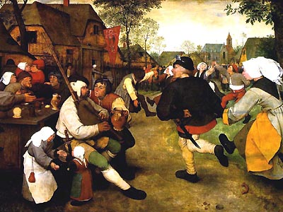
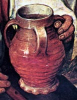
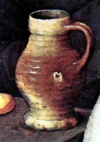
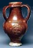
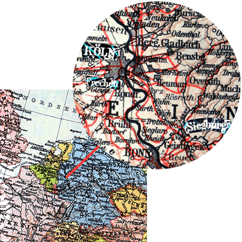
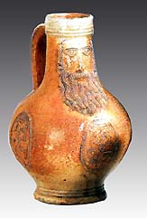
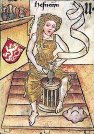

| Pieter Bruegel the
Elder (1525-1569)
Bruegel and his Rheinisch Stoneware
The Flemish painter Pieter
Bruegel the Elder, also nicknamed 'Peasant Bruegel' lived
from 1525-1569. He was influenced by Hieronymous Bosch, while he
himself strongly influenced later Flemish painting. The topics of
his paintings were the countryside and the peasants that lived there
(although he himself was far from being a peasant).

His work 'Peasant
Dance', painted 1568, shows a group of peasants dancing
to music in front of what might be the local tavern. The atmosphere
is lively and a few drinks have probably already been downed - there
is kissing going on and a heated discussion is happening at the
table. The woman on the right has a money pouch and a key - she
has some position of relative importance, perhaps a tavern or some
other shop owner. The times seem happy and carefree, but war is
not far away, and defense may be needed at any time, as evidenced
by the short sword at the dancing man's side.
Interestingly for the potter, Bruegel's painting
also depicts a number of Rheinisch stoneware pots. The name Rheinisch
Stoneware (sometimes labeled 'Rhenish') stems from the river
Rhine (in German, 'Rhein'), along which it was predominantly made
during Bruegel's lifetime in the 16th C.

Above
we see two examples of Rheinisch stoneware, a four handled and a
single handled jug, extracted from Bruegel's painting. What can
we deduce from this? First of all we can say that Rheinisch stoneware
was made for the peasantry, and not the gentry of 16th C society.
These were mugs and jugs made for everyday use and probably saw
a lot of it, as is implied by the broken handle visible below the
dancing woman on the right. Note the interesting blow-out firing
fault visible on the single handled jug on the right, probably caused
by a stone embedded in the rough clay. Note also the finger or thumb
marks along the base of the pots, crudely making the 'frilled' foot
rim typical of the late Middle Ages and early Renaissance. These
vessels were not made with aesthetics in mind, but purely for functional
purposes, without much time wasted on appearances. Rheinisch stoneware
was salt-glazed ware, which 16th C Germany became particularly well
known for. This was rough, tough stoneware, made for everyday domestic
use - fermenting, drinking, storage etc., in contrast to the more
decorative works of German faience. In color these salt-glazed stonewares
ranged from gray to white and brown, depending on the iron content.
Salt-glaze was particularly suited to functional ware, being even
impervious to acids. Thus Rheinisch salt-glaze wares also found
much use with apothecaries. Its main centers of manufacture were
Cologne (Köln), Frechen, Höhr-Grenzhausen, Siegburg and
Raeren (further to the south).

A
famous example of Rheinisch saltglaze is the 'Bartmannskrug', literally
the 'Bearded Man Jug', a round-bellied jug with a bearded face on
it's neck. In England, they were called 'Greybeards' or 'Bellarmines',
which stems from the name of then hated Cardinal Bellarmino. Sprigged
relief decoration is typical of Rheinisch stoneware, especially
from the Renaissance and later periods.
Stoneware developed in Germany independently of Eastern
influences around 800 AD. Salt-glaze emerged as a popular technique
around the 16th C. Clays were mined with various methods. Around
Siegburg, clay could be found close to the surface and only shallow
digging was necessary, but at Raeren in the Westerwald, deep shafts
were dug to reach the clay. Similar to ageing processes in the East,
the clay was left exposed to the elements for a season or so, to
improve plasticity. Later, sand would be added as a form of grog,
to add 'tooth' and reduce shrinkage.
But
it was not only clay that needed to be located close to the workshops,
but also wood for firing. This was found in abundance in the Westerwald
(the Western Wood), where beech was cut for that purpose. The wood
had to be dried for up to six months before it could be used as
fuel. When salt-glazing became common in the 16th C, large quantities
of salt were also required. Being a well frequented trade route,
the river Rhine was able to facilitate this. Thus we find the main
salt-glaze centers in medieval Germany are located along or near
river ports to which northern sea-salt would be delivered.
Interestingly, as can be seen from the mid 15th
C Hofämterspiel tarot card above, strutted kick-wheels
were in use at the time. The woman potter is using a piece of bone
to incise a pattern on the pot she is throwing.
Bruegel's painting 'Peasant Dance' shows that Rheinisch
saltglazed wares were widespread and not only popular in Germany
but also in neighboring countries. In fact, Rheinisch stoneware
was exported to England and as far as Quebec,
Canada.
Further reading: David Gaimster, Stoneware Production
in Medieval and Early Modern Germany, in Pottery in the Making,
Freestone & Gaimster (ed.), London, 1997
More Articles
|